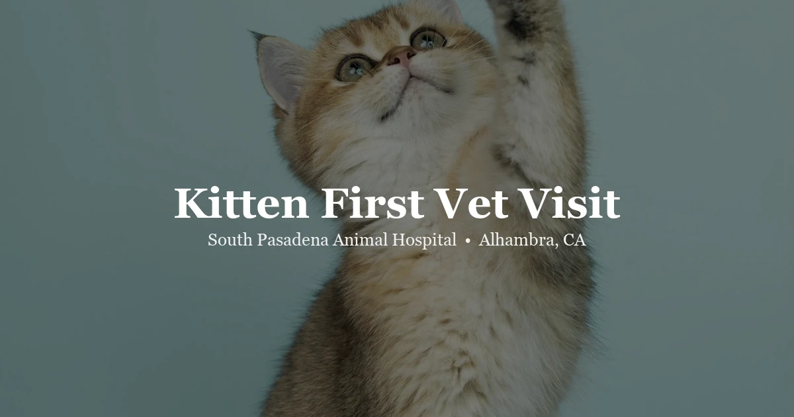

April 14, 2026 · 8 min read
Your Kitten’s First Vet Visit in Alhambra: What to Expect & What to Bring

We get the same nervous first-time call constantly — someone picked up a kitten from a shelter, a rescue, a breeder, or a box left on a neighbor's porch, and now they're not sure what happens next. Here's our honest answer: come in sooner than you think you need to.
At our Alhambra kitten vet clinic, we see new kitten owners every week, and the visit always goes smoother for the ones who knew roughly what to expect. That's what this is.
Why we push owners to come in within the first week
Kittens are born with some borrowed immunity from their mother, and that protection fades on a schedule — usually closing around 6–8 weeks. Vaccines need to start before that gap opens up, not after. Add to that the fact that nearly every kitten, regardless of where they came from, shows up with roundworms, and often fleas or ear mites too. Catch those early and it's a quick fix. Wait, and it's not. We also want a baseline exam while everything looks normal, so if something changes later, we have something to compare it to. If your kitten came with paperwork showing vaccines already started, bring it — we'll map out what's done and what's still needed.
What actually makes the visit go smoothly
Bring a secure carrier — hard or soft-sided, doesn't matter — with something that smells like home tucked inside, a small blanket or a piece of your clothing. Bring any records from the breeder, rescue, or shelter. If you can manage it, bring a pea-sized fresh stool sample in a sealed bag or container, collected within the last 4–6 hours; that lets us screen for parasites without a second trip. And write your questions down ahead of time — kitten visits move fast, and it's easy to walk out forgetting the thing you actually wanted to ask.
What we're actually doing during the exam
We go nose to tail. Eyes for discharge or cloudiness, ears for mites or infection, mouth for bite alignment and how the baby teeth are coming in, heart and lungs for murmurs or anything off in the rhythm, belly for anything enlarged or painful, skin and coat for fleas or ringworm, and we watch how they move to check limb development. It's a lot in one visit, but kittens tolerate it well — most are more curious than scared.
Vaccines: what's core and what depends on your kitten
FVRCP is the one every kitten gets — it covers feline viral rhinotracheitis, calicivirus, and panleukopenia. We give it as a series, usually 6–8 weeks, then 10–12, then 14–16. If your kitten's already past those windows when we meet them, we compress the schedule to catch up. Rabies comes at 12 weeks or older — California requires it for cats. FeLV vaccine is one we discuss case by case: any chance of outdoor access, any contact with cats of unknown status, or a multi-cat household where we're not sure who's been tested — that's when we recommend it. At the first visit your kitten usually gets the first FVRCP dose unless records show otherwise; rabies and FeLV typically come at later visits.
Why we test every kitten for FIV and FeLV, no exceptions
It doesn't matter where the kitten came from — we test for both. FIV wears down the immune system slowly over years. FeLV can cause cancer, anemia, and immune suppression, and it's just as serious. The test itself is a simple blood draw, results in about 10 minutes. Most kittens come back negative, but a positive caught now changes how we plan their care, whether other cats at home need testing, and whether outdoor access is even on the table. Finding out years later, after exposure to other cats, is the outcome we're trying to avoid.
Deworming happens whether or not we see worms on the fecal
Roundworms and hookworms shed intermittently, so a clean fecal result doesn't mean a clean kitten. We deworm at the first visit as a matter of course, and we check that fecal sample for giardia and coccidia too. Flea prevention comes up in the same conversation — even a kitten who never goes outside can pick up fleas from shoes or clothing, and starting prevention early beats treating an infestation later.
Spay and neuter: we don't need an answer today
Most cats get spayed or neutered around 5–6 months, ahead of a female's first heat cycle, which in some breeds can start as early as 4–5 months. We'll talk through timing based on your specific kitten's breed and development — some owners wait longer for certain breeds, and some shelter kittens already arrive fixed. No need to commit at the first visit.
Microchipping while they're already here
If your kitten isn't chipped yet, this is the easiest time to do it — a quick injection between the shoulder blades, permanent, and it dramatically improves the odds of getting your cat back if they ever slip out. Every shelter and most clinics scan for chips automatically now, which is exactly why it matters.
What you walk out knowing
By the end of the visit you'll know your kitten's health status, when to come back for the next vaccine round, when spay/neuter conversations pick back up, and what to watch for at home in the meantime. Plan on 3–4 visits in the first six months to get through the vaccine series and the spay/neuter consult — after that, most healthy indoor cats settle into annual wellness exams.
Frequently Asked Questions
When should I take my kitten to the vet for the first time?
Ideally, schedule your kitten's first vet visit within the first week of bringing them home, and no later than 8 weeks of age. Early visits establish baseline health, start the vaccine series, screen for parasites, and give you a roadmap for the first year of care.
What vaccines does a kitten need?
The core vaccine for kittens is FVRCP (feline viral rhinotracheitis, calicivirus, and panleukopenia), given as a series of 3 doses starting at 6–8 weeks, 3–4 weeks apart. Rabies vaccine is given at 12 weeks or older. FeLV vaccine is recommended for kittens with any outdoor exposure or in multi-cat households.
Should I test my kitten for FIV and FeLV?
Yes. FIV/FeLV testing is recommended for all new kittens, especially those from shelters, rescues, or unknown backgrounds. Both viruses are serious and lifelong — knowing your kitten's status early helps you make the right decisions about their care and household.
When should I spay or neuter my kitten?
Most vets recommend spaying or neutering at around 5–6 months for cats, before the first heat cycle in females. Your vet will discuss the ideal timing based on your kitten's breed, development, and lifestyle.
What should I bring to my kitten's first vet visit?
Bring any paperwork from the breeder, shelter, or rescue (vaccine records, deworming history), a fresh fecal sample in a sealed bag if possible, your kitten in a secure carrier, and a list of any questions you have.
Ready to bring your kitten in?
We genuinely like new kitten visits. We take the time to answer your questions and walk through the care plan so your kitten's first experience at the vet is calm rather than stressful. We're at 3116 W Main St in Alhambra, Monday through Friday — book an appointment or call (626) 441-1314.